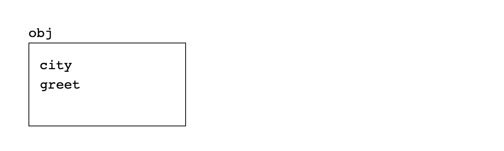
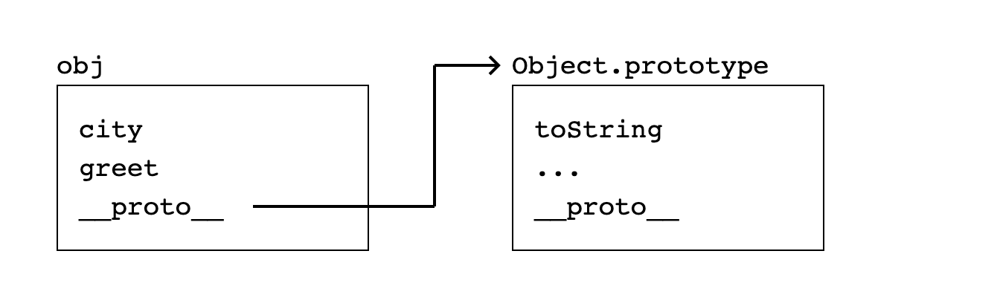
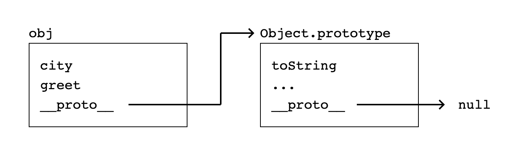
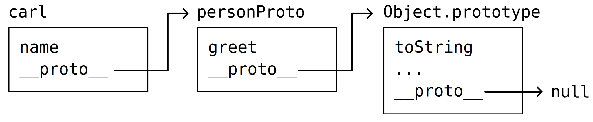

Web
Object-oriented JavaScript
## <i class="fas fa-tasks"></i> Overview of Today's Class - Wat (Video) - Quiz about last week's lecture - Correction of last week's assignment - Prototype-oriented JavaScript - Object-oriented JavaScript - Manipulating DOM objects - Drawing in the HTML Canvas - Introduction of next week's assignment
## <i class="fa-solid fa-graduation-cap"></i> Educational Objectives On completion of this part, students will be able to: - Create object using the class syntax - Use the `extends` keyword to create a class as the child of another class - Use the `super` keyword to access and call functions on an object's parent - Use the `static` keyword to create static methods and properties - Understand the roles that prototypes play in JavaScript - Manipulate the DOM using JavaScript - Draw in the HTML Canvas using JavaScript - Manipulate arrays and objects in JavaScript using the array methods
<a href="https://www.destroyallsoftware.com/talks/wat" target="_blank"> <img src="images/js_wat.png" style="width: 50%; text-align: center;" /> </a>
Quiz
Foundations of JavaScript
## <i class="fas fa-question-circle"></i> Question 1 Quelle ou quelles affirmations sont correctes à propos de JavaScript: - (A) JavaScript est un language compilé - (B) JavaScript est un language interpreté - (C) JavaScript est un language statique - (D) JavaScript est un language dynamique - (E) JavaScript est un language orienté objet - (F) JavaScript est un language orienté prototype - (G) Aucune affirmation correcte Notes: <div class="spoiler"> - (B) JavaScript est un language interpreté - (D) JavaScript est un language dynamique - (F) JavaScript est un language orienté objet (mais prototype-based, par opposition à class-based) </div>
# <i class="fas fa-question-circle"></i> Question 2 Quel est l'output du code suivant ? ```js[] function fun(value) { var v = value; } fun(42); console.log(v); ``` - (A) `42` - (B) `undefined` - (C) `Error` - (D) Aucune réponse correcte Notes: <div class="spoiler"> (C) `Error` (v is not defined) `v` n'est défini que dans la fonction, bien que ce soit une `var`. `v` n'est donc pas défini dans le scope global, et l'appel à `console.log(v)` provoque une `ReferenceError`. </div>
# <i class="fas fa-question-circle"></i> Question 3 Quel est l'output du code suivant ? ```js[] function fun(value) { if (value == 42) { var v = value; } return v; } console.log(fun(42)); ``` - (A) `42` - (B) `undefined` - (C) `Error` - (D) Aucune réponse correcte Notes: <div class="spoiler"> (A) `42` `v` est défini dans un bloc de la fonction, son scope est donc **toute** la fonction. `v` est donc définie à la ligne 5, et la ligne 6 retourne `42`. </div>
# <i class="fas fa-question-circle"></i> Question 3b Quel est l'output du code suivant ? ```js[] function fun(value) { if (value == 42) { let v = value; } return v; } console.log(fun(42)); ``` - (A) `42` - (B) `undefined` - (C) `Error` - (D) Aucune réponse correcte Notes: <div class="spoiler"> (C) `Error` `v` est défini dans un bloc de la fonction, son scope est donc **le bloc**. `v` n'est donc pas définie à la ligne 5, et la ligne 6 retourne une `ReferenceError`. </div>
# <i class="fas fa-question-circle"></i> Question 4 Quel est l'output du code suivant ? ```js[] var v = 42; function fun(value) { var v = value; return v; } console.log(fun(43), v); ``` - (A) `42` `42` - (B) `43` `42` - (C) `43` `43` - (D) `undefined` `42` - (E) `Error` - (F) Aucune réponse correcte Notes: <div class="spoiler"> (B) `43` `42` La variable `v` déclarée dans la fonction `fun` est locale à la fonction, et ne modifie pas la variable `v` globale. </div>
# <i class="fas fa-question-circle"></i> Question 5 Quelle est la valeur imprimée par le programme suivant? ```js console.log("PI = ${Math.PI}"); ``` - (A) `"PI = 3.141592653589793"` - (B) `"PI = ${Math.PI}"` - (C) `"PI = 3.14"` - (D) `"PI = ${3.141592653589793}"` - (E) Aucune réponse correcte Notes: <div class="spoiler"> (B) `"PI = ${Math.PI}"` Les *template literals* sont délimités par des backticks (\`). Ici, on utilise des guillemets (") qui ne sont pas interprétés comme des *template literals*. La chaîne de caractères est donc imprimée telle quelle. </div>
# <i class="fas fa-question-circle"></i> Question 6 Quelle est la valeur imprimée par le programme suivant? ```js function fun(value) { let v = value; return [() => v++, () => v--]; } let [inc, dec] = fun(10); console.log(inc()); console.log(inc()); console.log(dec()); console.log(dec()); ``` - (A) `10`, `11`, `12`, `11` - (B) `11`, `12`, `11`, `10` - (C) `10`, `11`, `10`, `9` - (D) `11`, `12`, `9`, `8` - (E) Aucune réponse correcte Notes: <div class="spoiler"> (A) `10`, `11`, `12`, `11` Tout d'abord, l'opérateur `++` est postfixé, donc `v++` retourne la valeur de `v` avant l'incrémentation, et similairement pour `v--`. Il ne peut donc pas s'agir de (B) ou (D). Ensuite, les deux fonctions retournées par `fun` sont des closures, elles capturent donc `v`, et toute modification à une variable capturée depuis une closure modifie la variable elle-même dans son environnement de départ. `inc` et `dec` modifient donc la même variable, et les changements de l'un sont visibles par l'autre. </div>
# <i class="fas fa-question-circle"></i> Question 7 Quelle est la valeur imprimée par le programme suivant? ```js[] var x = "2"; if (x == 2) { var x = 3; } console.log(x); ``` - (A) `2` - (B) `"2"` - (C) `3` - (D) `"3"` - (E) `null` - (F) `undefined` - (G) Aucune réponse correcte Notes: <div class="spoiler"> (C) `3` Deux choses ont lieu ici. Premièrement, bien que `x` soit une string comparée à un nombre, JavaScript parse la string en nombre pour effectuer la comparaison. On entre donc dans le `if`. Ensuite, `x` est redéfinie dans le bloc du `if` à la valeur `3`. Puisque `var` définit une variable dans le scope du contexte d'exécution par opposition au scope du bloc, `x` est redéfinie à 3 globalement, et donc imprimée à la ligne 5. </div>
Prototype-oriented JavaScript
## <i class="fab fa-js"></i> Recall JavaScript's Types ECMAScript defines 7 **primitive** (Immutable) types for values: ```js undefined; // Undefined 3.14; // Number true; // Boolean "Heig-vd"; // String 9007199254740992n; // BigInt Symbol("Symbol") // Symbol null; // Null (Structural root primitive) ``` ECMAScript defines a special mutable type called **object** for collections of properties. ```js {prop: "value"}; // Object ``` https://developer.mozilla.org/en-US/docs/Web/JavaScript/Data_structures#Data_types
## <i class="fab fa-js"></i> Objects An object is a mutable unordered collection of properties. A property is a tuple of a key and a value. A property key is either a string or a symbol. A property value can be any ECMAScript language value. ```js let car = { make: 'Ford', model: 'Mustang', year: 1969 } ``` You can access properties using the **dot notation** for properties named `"^[a-z]+(_[a-z]+)+$"`: ```js let car = new Object(); car.make = 'Ford'; car.model = 'Mustang'; car.year = 1969; ``` Properties can also be accessed or set using the **bracket notation**: ```js let car = new Object(); car['make'] = 'Ford'; car['model'] = 'Mustang'; car['year'] = 1969; ``` https://developer.mozilla.org/en-US/docs/Web/JavaScript/Guide/Working_with_Objects Notes: Note that if a property does not exist on an object, assigning it a value will create it. Accessing an undefined property will return `undefined`.
## <i class="fab fa-js"></i> Methods When a function is stored as a property of an object, we call it a **method**. When it is called using the dot notation on an object, the value of `this` inside the method is the object the method is called on. ```js var apple = { color: 'red', toString: function() { return `This fruit is ${this.color}!`; } } console.log(apple.toString()); // This fruit is red! ```
## <i class="fab fa-js"></i> Methods are just functions If a method is not called on an object, `this` is bound to the **global** object. ```js var apple = { color: 'red', toString: function() { console.log(this); return `This fruit is ${this.color}!`; } } var f = apple.toString; console.log(f()); // This fruit is undefined! ``` The global object contains all global variables and functions as properties.
## <i class="fas fa-hand-paper"></i> Helper functions in methods A function defined inside a method is *not* a method of the object, so the `this` keyword is bound to the global object. This is an **error** in the design of the language as it prevents the definition of helper functions. ```js var color = 'blue'; var apple = { color: 'red', toString: function() { function helper() { return `This fruit is ${this.color}!`; } return helper(); } } // This fruit is blue! console.log(apple.toString()); ``` This issue can be addressed with: - The `apply(this, args)`, `call(this, arg, ...)` or `bind(this)` methods of a `Function` object that redefine `this`. - The arrow function expression that does not define its own `this` and takes the one present in its scope. Notes: - The `apply(this, args)` function is a method of `Function` instances, which allows to override the `this` object with one provided as argument. For example, given a `getName` method on a `Person` object, calling `getName.apply(animal, args)` will execute that `getName` function as if it had been called like `animal.getName(args)`. - The `call(this, ...)` function is identical, except that the arguments are given directly, instead of in the form of an array. - The `bind(this)` method of `Function` returns a new function whose `this` object is overridden with the provided one.
## <i class="fab fa-js"></i> The prototype property Every object in JavaScript has a built-in property, refered to as its **prototype**. **It has no standard name**, but in practice, all browsers use `__proto__`. To access it, one must use `Object.getPrototypeOf(obj)`. By default, the prototype of an object is `Object.prototype`. ```js var obj = { city: "Madrid", greet() { console.log("Welcome to ${this.city}!") } } console.log(Object.getPrototypeOf(obj) === Object.prototype); //true ``` When an object's prototype property is the prototype of another object, we say that the former *inherits* from the latter. Here, `obj` inherits from `Object`. Notes: Note that there *does* exist a property of `Object` named `prototype`. This property is different from `Object.__proto__`, as we will see in the next slides. For now, think of `Object.prototype` as the name given to the prototype used by all objects inheriting from `Object`. For additional information see : - [`__proto__`](https://developer.mozilla.org/en-US/docs/Web/JavaScript/Reference/Global_Objects/Object/proto) - [`Object.getPrototypeOf()`](https://developer.mozilla.org/en-US/docs/Web/JavaScript/Reference/Global_Objects/Object/getPrototypeOf).
## <i class="fab fa-js"></i> The prototype chain Prototypes being objects, they have their own prototype, pointing to another object's prototype (or null). This forms what is called a **prototype chain**. The chain ends when an object's prototype is `null`. This is the case for `Object.prototype`, since `Object` inherits from nothing. <div class="r-stack" style="width: 80%; margin-inline: auto">    </div> <!-- --> <span class="fragment"> When accessing an attribute of an object, if it cannot be found on that object, it is then searched along the prototype chain. ```js obj.toString(); // Uses Object.prototype.toString ``` </span>
## <i class="fab fa-js"></i> Creating objects from prototypes Methods and properties intended to be shared among instances are thus usually put in the prototype. One way to achieve this is using `Object.create(proto)`, which returns an empty object with `proto` as its prototype. ```js const personProto = { greet() { console.log(`Hello, my name is ${this.name}!`); }, }; let carl = Object.create(personProto); // uses personProto as prototype for the newly created object carl.name = "Carl"; carl.greet(); // Hello my name is Carl! console.log(Object.getPrototypeOf(carl) === personProto); //true ``` In the example above, `carl`'s prototype will be `personProto` and thus inherit the `greet` method. 
## <i class="fab fa-js"></i> Prototype and object manipulation There exist other functions that help manipulate prototypes and objects. - `Object.create(proto)`: Creates a new object with the prototype property set to `proto` - `Object.setPrototypeOf(obj, proto)`: Sets the prototype of `obj` to `proto` - `Object.assign(dst, src)`: Extends `dst` with all [enumerable](https://developer.mozilla.org/en-US/docs/Web/JavaScript/Reference/Global_Objects/Object/propertyIsEnumerable), [own](https://developer.mozilla.org/en-US/docs/Web/JavaScript/Reference/Global_Objects/Object/hasOwn) properties of `src` <span class="detail">(hence excluding `__proto__`)</span> Notes: Note that `Object.assign` does not immediately have anything to do with prototypes. It is a general-purpose function that copies all (enumerable own) properties from one object to another. It is mentionned here because it can be useful when manipulating prototypes. For example, in conjuction with constructors, which we cover in the next slide: ```js const personProto = { greet() { console.log(`Hello, my name is ${this.name}!`); } }; function Person(name) { this.name = name; } // Extend Person.prototype with the properties of personProto Object.assign(Person.prototype, personProto); // Use Person as a constructor let scott = new Person("Scott"); scott.greet(); // Hello, my name is Scott ! console.log(Object.getPrototypeOf(scott) == Person.prototype); //true ```
## <i class="fab fa-js"></i> Functions as Constructors If a function is called with the `new` operator, it is considered a constructor: 1. A new object is created, 2. The function is called with `this` bound to the new object, 3. If the function does not return an object, `this` is returned. ```js function Fruit(color) { this.color = color; } // Creates a new object and initializes it using the Fruit() function. var apple = new Fruit("red"); ``` But how does JavaScript know what to use as the prototype of that new object? Notes: The exact rules for what is returned by a constructor are a bit more complex: - if the constructor function returns a non-primitive value, it becomes the result of the `new` expression. - otherwise (if it returns a primitive, or nothing), the newly created object (the value of `this`) is returned.
## <i class="fab fa-js"></i> Function prototypes Functions have a special `prototype` property that contains the prototype to be used for the newly created object, when the function is called as a constructor. ```js function Fruit(color) { this.color = color; } // Fruit.prototype is the object that will become the prototype // of any object created when Fruit() is called with new. Fruit.prototype.toString = function() { return `This fruit is ${this.color}!`; } var apple = new Fruit("red"); console.log(apple.toString()); // This fruit is red! ``` <span class="detail"> Note that - `Fruit.prototype` is an object, whose prototype is the default: `Object.prototype`. - `apple`'s prototype is `Fruit.prototype`. - `toString` is not found on `apple`, then found on `Fruit.prototype`. </span> Notes: Only functions have a `prototype` property. Objects don't, and only have a `__proto__` property. To recap: - The `__proto__` property of an object describes what it inherits, while - the `prototype` property of a function describes what **objects created with that function** will inherit. https://developer.mozilla.org/en-US/docs/Web/JavaScript/Reference/Global_Objects/Function/prototype For more information on the `new` operator, see: https://developer.mozilla.org/en-US/docs/Web/JavaScript/Reference/Operators/new
## <i class="fab fa-js"></i> Prototype Inheritance Prototype inheritance is a way to simulate class inheritance in JavaScript, by - calling the "parent" constructor from the "child" constructor, to set the parent properties. - make the "child" constructor's `prototype` inherit from the "parent" constructor's `prototype`. ```js function Fruit(color) { this.color = color; } Fruit.prototype.toString = function() { return `This fruit is ${this.color}!`; } function Apple(color, name) { Fruit.call(this, color); // call the constructor of Fruit to "inherit" its properties this.name = name; } Apple.prototype.hasWorm = function() { return false; } // make Apple.prototype inherit from Fruit.prototype (the prototype of fruit objects) Object.setPrototypeOf(Apple.prototype, Fruit.prototype); let apple = new Apple("green", "golden"); console.log(apple.hasWorm()); // false console.log(apple.toString()); // This fruit is green! console.log(apple instanceof Apple); // true console.log(apple instanceof Fruit); // true ``` Because the prototype (`__proto__`) of `Apple.prototype` is `Fruit.prototype`, when a lookup fails on the `apple` object, it now falls back on the `Fruit.prototype`, thanks to the prototype chain inheritance. Notes: Using `Object.setPrototypeOf()` has a potential performance hit if instances have already been created by the constructor. An alternative is to use `Object.create()` to build the inheritance chain : ```js // Create a prototype object inheriting from Fruit. let applePrototype = Object.create(Fruit.prototype); // Move any Apple properties to that new prototype. applePrototype = Object.assign(applePrototype, Apple.prototype); // Reset the constructor applePrototype.constructor = Apple; Apple.prototype = applePrototype; ``` However this requires manually copying non-enumerable non-own properties, including one named `constructor`, which points back to the function that was used to construct that type of object. This makes this approach more involved and error prone. More details can be found [here](https://developer.mozilla.org/en-US/docs/Web/JavaScript/Inheritance_and_the_prototype_chain#building_longer_inheritance_chains)
## <i class="fab fa-js"></i> Consider the Array object The `Array` object is a global (function) object that is used in the construction of arrays, which are high-level, list-like objects. ```js let fruits = ['Apple', 'Banana', 'Pear']; ``` Here, the `[]` notation is a **shorthand** for the `Array` constructor. ```js let fruits = new Array('Apple', 'Banana', 'Pear'); ``` Note that `Array` is thus a function and the `new` operator makes it be used as a constructor. https://developer.mozilla.org/en-US/docs/Web/JavaScript/Reference/Global_Objects/Array
## <i class="fab fa-js"></i> Consider the Array object - indices Because arrays are objects, getting `myArray[42]` is equivalent to accessing a property named `"42"` on the object `myArray`. That's why the `for ... in` loop, which iterates over an object's properties, can be used to iterate over the indices of an array. ```js let fruits = ['Apple', 'Banana', 'Pear']; for (let index in fruits) { console.log(index); // 0, 1, 2 } ```
## <i class="fab fa-js"></i> Overriding the prototype Changes to an object's prototype are seen by all instances that inherit from that prototype. That's why it's called a prototype. The properties and methods of prototypes can be **overridden** along the chain. ```js var fruits = ['apple', 'banana', 'pear']; console.log(fruits.toString()); // apple,banana,pear Array.prototype.toString = function() { return `Array of size ${this.length}`; } console.log(fruits.toString()); // Array of size 3! ``` <span class="detail">https://developer.mozilla.org/en-US/docs/Web/JavaScript/Reference/Global_Objects/Object/prototype</span> Notes: The `fruits` array object inherits from `Array.prototype` (i.e. its `__proto__` points to `Array.prototype`).
## <i class="fab fa-js"></i> Recap - Objects are mutable, unordered collections of properties. - All objects have a prototype (usually `__proto__`) property. - The prototype of an object stores all attributes and methods that are shared among instances. - Prototypes form a chain that is traversed when looking up properties. - Functions can be called as constructors if used with the `new` keyword. - Their special `prototype` property stores what will be the prototype of the objects it constructs.
## <i class="fab fa-js"></i> Putting it all together As objects inherit properties from their prototype, we can say that JavaScript is a **prototype-based** language and not a **class-based** one. While JavaScript does offer a class syntax, it is only **syntactic sugar** for the prototype-based inheritance system.
Object-oriented JavaScript
## <i class="fab fa-js"></i> The Object-oriented Syntax Introduced in ECMAScript 2015, classes are syntactic sugar over JavaScript's prototype-based inheritance. It is **not** a new object-oriented inheritance model. ```js class Fruit { constructor(color) { this.color = color; } toString() { return `This fruit is ${this.color}!`; } } class Apple extends Fruit { constructor(color, name) { super(color); this.name = name; } toString() { return super.toString(); } } let apple = new Apple("green", "golden"); console.log(apple.toString()); // This fruit is green! ``` - The `extends` keyword is used in class declarations or class expressions to create a class as the child of another class. - The `constructor` method is a special method for creating and initializing an object described by a class. - The `super` keyword is used to access and call functions on an object's parent. https://developer.mozilla.org/en-US/docs/Web/JavaScript/Reference/Classes
## <i class="fab fa-js"></i> Private Properties, Getter and Setter The class syntax gives the ability to define private properties (and methods) with `#` and to define advanced properties though their getters and setters. ```js class Fruit { // A private property #color; // getter and setter of a public `color` property get color() { return this.#color; } set color(color) { this.#color = color; } } let apple = new Fruit(); apple.color = 'red'; // calls the setter console.log(apple.color); // red (calls getter) console.log(apple.#color); // SyntaxError: Private field '#color' must be declared in an enclosing class ``` https://developer.mozilla.org/en-US/docs/Web/JavaScript/Reference/Classes
## <i class="fab fa-js"></i> Static Properties and Methods The static keyword can also be used to define static properties and methods. Static methods can be called without instantiating the class and they cannot be called on an instance. Static methods are often used to create utility functions. ```js class Point { constructor(x, y) { this.x = x; this.y = y; } static distance(a, b) { const dx = a.x - b.x; const dy = a.y - b.y; return Math.hypot(dx, dy); } } let p1 = new Point(5, 5); let p2 = new Point(10, 10); console.log(Point.distance(p1, p2)); // 7.0710678118654755 ``` https://developer.mozilla.org/en-US/docs/Web/JavaScript/Reference/Classes Notes: Static methods and properties are defined on the class itself, not on the prototype. They are thus not inherited by instances of the class.
## <i class="fab fa-js"></i> Mix-ins Multiple inheritance is not supported in JavaScript, but it possible to simulate with mix-ins. ```js const canWalk = (Base) => class extends Base { walk() { console.log("Walking..."); } }; const canEat = (Base) => class extends Base { eat() { console.log("Eating..."); } }; class Person extends canWalk(canEat(Object)) { constructor(name) { super(); this.name = name; } } let person = new Person("John"); person.walk(); // Walking... person.eat(); // Eating... ``` https://developer.mozilla.org/en-US/docs/Web/JavaScript/Reference/Classes
Javascript Modules
## <i class="fab fa-js"></i> Modules ECMAScript 6 introduced modules, a reusable piece of code that can be exported from one program and imported for use in another program. ### Exporting Any value can be exported (object, number, string, etc). ```js // Export upon declaring a value export function sum(a, b) { ... } export const ANSWER = 42 // Export an already declared value export { val1, val2, ... } ``` An export can be made **default** by following `export` with `default`. ```js export default myFunction // equivalent to export { myFunction as default }; ``` This is useful when we want to export a single value/expression from a module. It also allows more flexible naming on import. Notes: There can be only one default export per module.
## <i class="fab fa-js"></i> Modules ### Importing The imported script must be loaded as a module with the `type="module"` attribute. ```html <script type="module" src="path/to/module.js"></script> ``` The `import` statement must always be at the top of the js file, before any other code. ```js import { export1, export2, ... } from "module-name"; // import specific named values import { export1 as alias1, ... } from "module-name"; // import value with alias (e.g. to solve name conflicts) import * as name from "module_name"; // import all into an object import name from "module-name"; // import the default export as "name". Does not need to match the export name // equivalent to import { default as name } from "module-name"; import "module-name"; // imports for side-effects; runs it but imports nothing. ``` https://developer.mozilla.org/en-US/docs/Web/JavaScript/Guide/Modules Notes: - `import expValue as aliasName` allows renaming the import and can be used to solve name conflicts - There can be only one `default` export per module which allows importing it directly under an alias without having to refer to its export name (if any)
## <i class="fab fa-js"></i> Modules - Example ```js // inside fruit.js class Fruit {} export Fruit; ``` ```js // inside apple.js import Fruit from 'fruit.js'; class Apple extends Fruit {} export Apple; ``` ```js // inside index.js import Apple from 'apple.js'; console.log(new Apple()); ``` ```html <!-- inside index.html --> <script type="module" src="index.js"></script> ```
Manipulating DOM objects
## <i class="fas fa-sitemap"></i> What is the DOM? - DOM stands for **Document Object Model** - The DOM is a programming interface for HTML and XML - The DOM represents the structure of a document in memory - The DOM is an object-oriented representation of the web page - The DOM lets other programming languages manipulate the document https://developer.mozilla.org/en-US/docs/Web/API/Document_Object_Model
## <i class="fas fa-sitemap"></i> The DOM's content tree ```html <html> <head> <title>My Document</title> </head> <body> <h1>Header</h1> <p>Paragraph</p> </body> </html> ``` When a browser such as Chrome or Firefox parses an HTML document, it builds a **content tree** and then uses it to **display** the document. <img src="images/html_content_tree.jpg" /> https://developer.mozilla.org/en-US/docs/Web/API/Document_object_model/Using_the_W3C_DOM_Level_1_Core
## <i class="fas fa-hand-paper"></i> Accessing the Document In JavaScript, the `Document` interface represents any web page loaded in the browser and serves as an entry point into the web page's content, which is the DOM tree. Access the `document` object and its properties from the Chrome DevTools. ```js document; document.location; // Getter returns location object (info about current URL). document.location = "https://heig-vd.ch/"; // Setter to update displayed URL. document.designMode = "on"; // Lets user interactively modify page content. document.referrer; // URL of page that linked to this page. ``` https://developer.mozilla.org/en-US/docs/Web/API/Document
## <i id="my-icon" class="fas fa-hand-paper"></i> Accessing the Elements of the DOM The `Element` interface represents the HTML elements loaded in the DOM tree. ```js console.log(document.getElementById("id")); console.log(document.getElementsByClassName("slide")); console.log(document.getElementsByTagName("h1")); ``` CSS Selectors can also be used to query elements. ```js console.log(document.querySelector("ul > li")); // selects the first matching element console.log(document.querySelectorAll("ul > li")); // selects all matching elements ``` Elements can then be modified in JavaScript. ```js document.getElementsByClassName("slide") .forEach(el => el.style = "background-color: blue"); let element = document.getElementById("my-icon"); element.innerHTML = "<p>Hello, World!</p>"; element.setAttribute("href", "https://www.heig-vd.ch/"); element.className; // Value of `class` attribute element.classList; // List of classes element.children; // List of child elements ``` https://developer.mozilla.org/en-US/docs/Web/API/Element
## <i class="fas fa-hand-paper"></i> Listening to DOM Events DOM Events are sent to notify code of interesting things that have taken place. Each event is represented by an object that inherits from the `Event` object, and may have additional custom fields and/or functions used to get additional information about what happened. ```js document.onkeydown = function(event) {console.log(event);} document.addEventListener('keydown', event => console.log(event)) ``` Important DOM events include `load`, `click`, `mouseenter`, etc. ```js element.addEventListener('mouseenter', event => doSomething()); ``` By default events propagate up the DOM tree, but this propagation can be stopped programmatically. ```js event.stopPropagation(); ``` Event handlers can also be registered from the HTML. ```html <a href="http://www.heig-vd.ch" onclick="event.stopPropagation();"> ``` https://developer.mozilla.org/en-US/docs/Web/Events Notes: For an example of event propagation, see: https://developer.mozilla.org/en-US/docs/Web/API/Document_Object_Model/Examples#example_5_event_propagation
## <i class="fab fa-js"></i> DOM Manipulation Libraries Libraries such as [jQuery](https://jquery.com/) and [Zepto](https://jquery.com/) are intended at simplifying DOM manipulation by extending the DOM and providing helpers. ```html <script src="https://ajax.googleapis.com/ajax/libs/jquery/3.4.1/jquery.min.js"></script> ``` ```js $(document).ready(function(){ $("p").click(function(){ $(this).hide(); }); }); ``` JQuery uses an **imperative style** that requires to specify the changes in the order they should happen. Modern frameworks (such as React, Angular or Vue) use a **declarative style** (what rather than how).
## <i class="fab fa-js"></i> Depending or not depending? The Peter Parker principle: <img src="https://media.giphy.com/media/10KIsXhwdoerHW/giphy.gif" alt="Remember..." /> ### Must Read - [Thou shalt not depend on me (NDSS 2017)](https://blog.acolyer.org/2017/03/07/thou-shalt-not-depend-on-me-analysing-the-use-of-outdated-JavaScript-libraries-on-the-web/) - [Small world with high risks (USENIX Security 2019)](https://blog.acolyer.org/2019/09/30/small-world-with-high-risks/) Notes: As an appetizer for these reads: the situation is bad. Each package indirectly depends on tens and tens of other packages on average, making more than a third of packages dependent on vulnerable code. This is due to old packages, poor dependency management, and poor awareness.
Drawing in the HTML Canvas
## <i class="fab fa-js"></i> Initializing a Canvas The Canvas API provides a means for drawing graphics via JavaScript and the `canvas` element. ```html <canvas id="canvas" width="800" height="600" /> ``` ```js let canvas = document.getElementById("canvas"); const ctx = canvas.getContext('2d'); // returns CanvasRenderingContext2D // setting the context properties ctx.strokeStyle = 'blue'; // line color ctx.fillStyle = 'green'; // fill color //draw a 100x100 px square starting at the origin ctx.strokeRect(0, 0, 100, 100); ``` By default, the origin of the grid on the canvas is positioned in the _top left_ corner at coordinate (0,0). All elements are placed relative to this origin. <img src="./images/canvas_default_grid.png" style="width:20%"> https://developer.mozilla.org/en-US/docs/Web/API/Canvas_API
## <i class="fab fa-js"></i> Drawing on the Canvas The canvas only supports two primitive shapes: rectangles and paths (lists of points connected by segments of lines that can be of different shapes). All other shapes must be created by combining one or more paths. Filling a rectangle: ```js ctx.fillRect(10, 10, 150, 100); // fillRect(x, y, width, height) ``` Free drawing using a path of straight lines: ```js // draw a triangle ctx.beginPath(); ctx.moveTo(50, 150); //move the pen ctx.lineTo(150, 60); ctx.lineTo(250, 150); ctx.closePath(); //connect current position with first ctx.stroke(); //draw the shape by stroking its outline ``` Drawing an arc: ```js ctx.beginPath(); // draw half a circle ctx.arc(50, 50, 10, 0, Math.PI); // arc(x, y, radius, startAngle, endAngle, counterclockwise = false) ctx.stroke(); ``` https://developer.mozilla.org/en-US/docs/Web/API/Canvas_API/Tutorial/Drawing_shapes
## <i class="fab fa-js"></i> Drawing on the Canvas Clearing a portion of the canvas: ```js //clear a square of 100x100px starting at the origin ctx.clearRect(0, 0, 100, 100); ``` It is also possible to render text: ```js ctx.fillText("test", 30, 10); // fillText(text, x, y) ``` https://developer.mozilla.org/en-US/docs/Web/API/Canvas_API/Tutorial/Drawing_text
## <i class="fab fa-js"></i> Transformations in the Canvas Transformations enables more powerful ways to translate the origin to a different position, rotate the grid and even scale it. Canvas states are stored on a stack: - When the `save()` method is called, the current drawing state is pushed onto the stack. - When the `restore()` method is called, the last saved state is popped off the stack and all saved settings are restored. When you perform transformations on the grid to draw an object you often want to restore a prior state to draw the next object. ```js ctx.fillStyle = 'rgb(0, 0, 255, 0.4)'; ctx.save(); angle = 0; while (angle < Math.PI/2) { ctx.translate(200, 200); //translate canvas origin so that the rotation is done around center of rectangle (and not (0,0)) ctx.rotate(Math.PI / 10); //rotate the canvas around the current origin ctx.translate(-200, -200); //translate back canvas origin ctx.fillRect(170, 170, 60, 60); //draw at (x - width/2, y - height/2) so that rectangle is centered around (200,200) angle += Math.PI / 10; } ctx.restore(); ``` Result: https://developer.mozilla.org/en-US/docs/Web/API/Canvas_API/Tutorial/Transformations
## Rendering Loop and Game Loop The [setTimeout](https://developer.mozilla.org/en-US/docs/Web/API/WindowOrWorkerGlobalScope/setTimeout) method sets a timer which executes a function or specified piece of code once the timer expires. The [setInterval](https://developer.mozilla.org/en-US/docs/Web/API/WindowOrWorkerGlobalScope/setInterval) method, offered on the Window and Worker interfaces, repeatedly calls a function or executes a code snippet, with a fixed time delay between each call. The [requestAnimationFrame](https://developer.mozilla.org/en-US/docs/Web/API/window/requestAnimationFrame) method tells the browser that you wish to perform an animation and requests that the browser call a specified function to update an animation before the next repaint. https://developer.mozilla.org/en-US/docs/Learn/JavaScript/Asynchronous/Timeouts_and_intervals Notes: `setInterval` [example](https://developer.mozilla.org/en-US/docs/Web/API/Window/setInterval#example_2_alternating_two_colors) `requestAnimationFrame` [example](https://developer.mozilla.org/en-US/docs/Web/API/Window/requestAnimationFrame#examples)